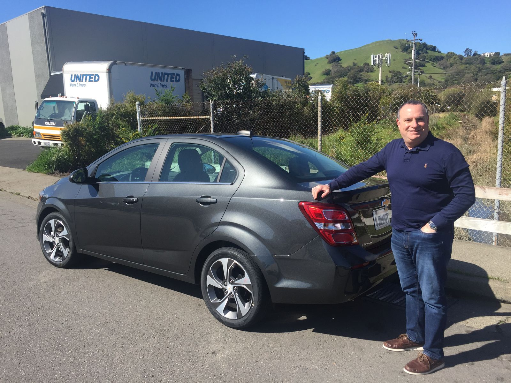
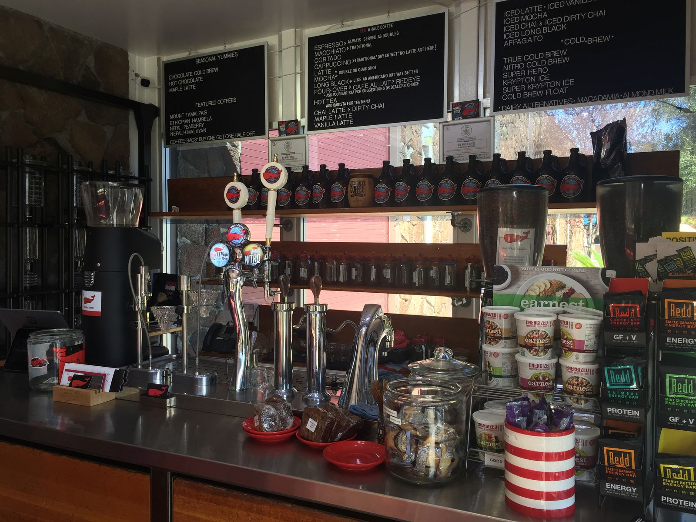

The Chevy Sonic and My First Yelp Review
The Dollar rental car at San Francisco airport has a "manager special", which is essentially a mystery car reveals when you get to the lot. We ended up with a brand new Chevy Sonic (with just seven miles on the odometer). Some fun facts about the 2019 Chevy Sonic, which I'd never heard of before:
- Despite the name Sonic, it is not really fast. My dad described it as driving a golf cart. Accelerating onto the highway was tricky.
- It is the smallest car my dad had ever driven.
- It comes standard with Apple CarPlay, which is really cool.
- You can feel every bump on the road, even ones that you can't see.
- The trunk is surprisingly big, easily fitting my dad's carry on and my duffel bag.

On the way to Napa valley, we stopped at a coffee shop called Red Whale Coffee. It was so great that I wrote my first Yelp review. If you're ever heading north over the Golden Gate bridge, be sure to stop here for a coffee, snack, and a quick pinball game.
